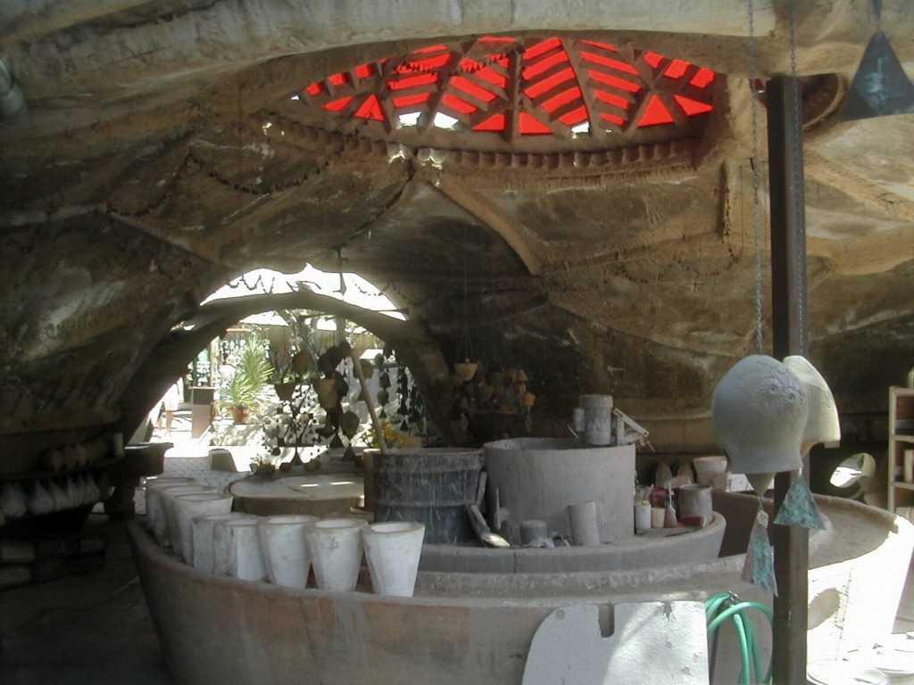
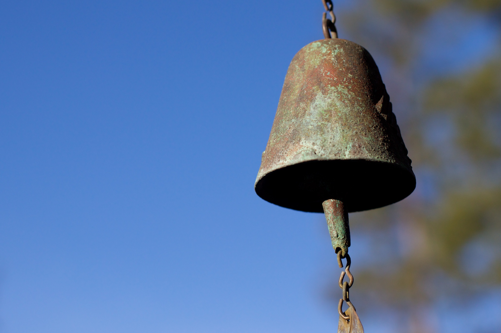

Cosanti
Cosanti is an experimental studio and residence created by architect Paolo Soleri in Paradise Valley, Arizona. The site features earth-formed concrete structures, sunken courtyards, and workspaces where bronze and ceramic bells are made.

How to Get There
Cosanti is located in a residential area of Paradise Valley, northeast of central Phoenix.
- Address: 6433 E Doubletree Ranch Rd, Paradise Valley, AZ 85253
- From Phoenix or Scottsdale: Drive toward Paradise Valley using Scottsdale Road or Tatum Boulevard, then follow local streets to Doubletree Ranch Road.
Because Cosanti is surrounded by homes, parking and access may be limited to specific areas. A maps app can guide you to the entrance, and posted signs will indicate where to park and walk in.
Earth-Cast Architecture
Many of the vaults and domes at Cosanti were built by shaping the earth itself and then pouring concrete over the excavated forms. After the concrete cured, the soil was removed, revealing sculptural shells with rough textures and organic shapes.
The result is a series of shaded outdoor rooms that respond to the desert climate and show a different approach to structure than conventional buildings.

Bells and Atmosphere
Cosanti is also known for its hand-crafted wind bells. Bronze and ceramic bells hang from the concrete structures and metal frames, creating sound as they move in the wind and adding to the atmosphere of the site.
For current tour information, hours, and gallery details, visit the official Cosanti website.